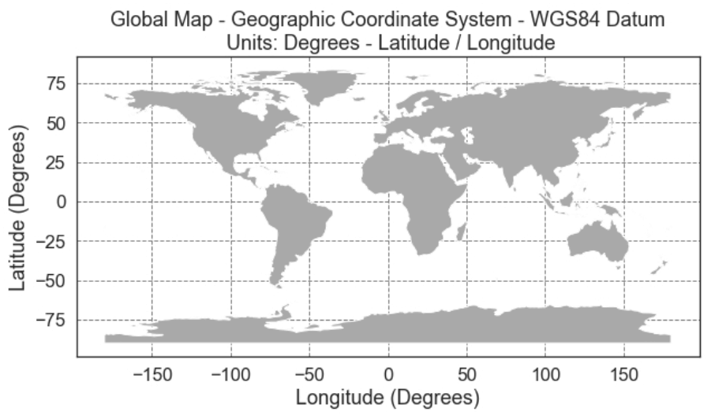
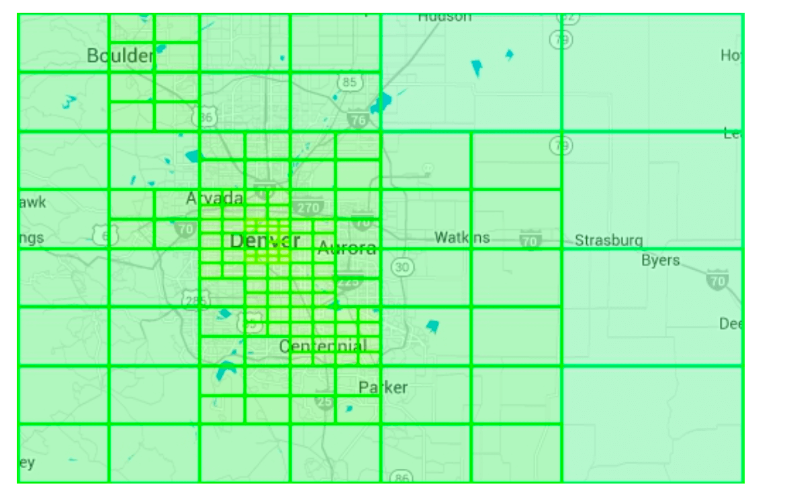

Chapter 16: Proximity Service
Introduction
A proximity service is designed to find nearby locations, such as restaurants, hotels, gas stations, and other businesses. This functionality is used in applications like Google Maps and Yelp to help users discover places within a defined radius.
Step 1: Understanding the Problem and Establishing Scope
**Functional Requirements**
1. Search for businesses based on user location (latitude, longitude) and search radius.
2. Allow business owners to add, update, or delete businesses (not real-time).
3. Provide detailed business information when requested.
**Non-Functional Requirements**
- Low latency: Users should get quick responses.
- Data privacy: Compliance with GDPR and CCPA regulations.
- High availability: Handle peak-hour spikes in busy locations.
**Back-of-the-Envelope Estimation**
- 100 million daily active users.
- 200 million businesses in the system.
- Search QPS Calculation:
- Users make 5 searches per day.
- Search QPS = (100M × 5) / 86,400 ≈ 5,000 QPS.
Step 2: High-Level Design
**API Design**
**Search Nearby Businesses**
GET /v1/search/nearby
- Request Parameters:
latitude: User’s location latitude.longitude: User’s location longitude.radius: Search radius (default: 5000m).
**Business APIs**
**Data Model**
- Since the read volume is high because two features are very commonly used, a realtional database such as MySQL is a good fit.
- Search for nearby businesses
- View the detailed information of a business
**Data Schema**
- Key Database tables are the business table and the geospatial index table
- The business table consists the detailed information about a business.
**High-Level System Architecture**
The system comprises of two parts: Location based service (LBS) and business related service.

- Location-Based Service (LBS):
- Processes location-based search queries.
- Read-heavy service with no write requests.
- QPS is high especially during peak hours in dense areas and the system is stateless.
- Business Service: Deals with two types of requests.
- Business owners create, update or delete businesses.
- Customers view detailed information about a business.
- Load Balancer: Routes traffic to LBS and Business service.
- Database Cluster:
- Uses primary-replica architecture for read-heavy workloads.
- There might be some discrepancy between data read b/w data read by LBS and data written by by primary database.
- This incosistency is not an issue beacuase the business information is not updated in real-time.
Step 3: Algorithms for Fetching Nearby Businesses
**Option 1: Two-Dimensional Search (Naive Approach)**

The most intuitive way is to draw a circle with pre-defined radius and find all the businesses within the circle.
SQL Query:
SELECT business_id, latitude, longitude
FROM business
WHERE (latitude BETWEEN :lat - radius AND :lat + radius)
AND (longitude BETWEEN :long - radius AND :long + radius);Problems:
- Inefficient: Requires scanning the entire database.
- Limited by one-dimensional indexes (latitude/longitude).
A potiential improvement is to build index on logitude and latitude columns, alhtough this is slighlty better but still vry slow.
Better Approach
- The problem with last approach is that the database index can only increase search speed in one dimension.
- An optimal apporach is to reprsent the two-dimensional data into one dimension using geospatial indexing.
- Hash: Even grid, Geo Hash
- Tree: Quadtree, Google S2, RTree

**Option 2: Evenly Divided Grid**

- Divides the world into fixed-size grids.
- Issue: Uneven business distribution (high density in cities, sparse in rural areas).
**Option 3: Geohash**
- Divide the planet into four quadrants along with the prime meridian and equator. And then divide each grid into four smaller grids.
- Each grids can be represented by altering b/w longitude and latitude bit.
- Repeat this subdivision


- Encodes latitude and longitude into a single alphanumeric string. It has 12 precisions (levels)
- Hierarchical grid structure allows for efficient searching.
- The right precision is chosen by using the minimal geohash length according to the table.
- Geohash guarantees that the longer a shared prefix is between two geohashes, the closer they are.

- Challenges:

- Boundary issues (businesses close to grid edges may get excluded).
- Two locations can be very close but have no shared prefix at all (can be on other side of equator)
- Two locations can have a long shared prefix but belong to different geohashes.
- Solution: Need to search neighboring grids.
**Option 4: Quadtree**
A quadtree is a tree data structure that recursively divides a two-dimensional space into four quadrants, with each internal node having exactly four children, representing the four sub-regions of the space.
- The quadtree is an in-memory data structure and it runs on each LBS server and built on server startup time.

- The root node is recursively broken down into 4 quadrants until no nodes are left with more than x number of businesses (100 in this case).

- The quadtree index doen't take too much memory (typically in GBs) and can easily fit in one server.
- Since tge time complexity to build the tree is nlogn, it might take a few minutes to build the tree.
- Efficient for k-nearest search queries (e.g., find the closest gas station).

Operational considerations
- For around 200 million businesses, it might take few minutes to build a quadtree at the server start time.
- While the quadtree is built it cannot serve traffic, therefore a new release should be rolled out incrementally to a subset of servers.
- When updating a business or adding a new the easiest approach is to incrementally rebuild the quadtree. (Leading to a lot of cache invalidation)
- Also possible to update the quadtree on the fly but more complex to implement. (Needs locking mechanism)
**Option 5: Google S2**
It maps a sphere to a !D index based on Hilbert curve.Two points that are close to each other on the Hilbert curve are close in 1D space.


- Divides the earth into small cells using a Hilbert curve.
- Great for geofencing becuase it can cover arbitrary areas with varying levels.
- Geofencing also allows to define parameters that surround the area of interest.
- Aother advantage if instead of having a fixed level of precision, we can specify min,max level and max cells in S2.
Tradeoff Comparison
Geohash
- Easy to use and implement- No need to build/rebuild a tree
- Supports fixed radius results
- Updating the index is easy.
- Cannot dynamically adjust the grid size based on population density.
Quadtree
- Slightly harder to implement.
- Supports fetching k-nearest businesses.
- Can dynamically adjust the grid size based on population desnsity.
- Updating the index is more complicated as might need to rebuild the whole tree.
Step 4: Scaling the Database and Caching Strategy
**Scaling the Business Table**
- Sharding by business ID ensures even data distribution.
- We have separate rows for each business in the table.
**Scaling the Geospatial Index**
- Might not be a good fit for the geohash table. In this case everything can fit in a single server so there's no tehcnical reason for sharding.
- A better approach is to have read-replicas to help with read loads.
**Cache Strategy**
The most obvious cache key choice is the location coordinate, however it has a few issues:
- Location coordinates from gps are not accurate.
- A user can move casuing the location coordinate to change.
- A better key is the geohash.
Step 5: Deployment Strategy and Final Architecture
**Region and Availability Zones**
- Deploy LBS and Business Service across multiple regions.
**Handling Real-Time Updates**
- Business updates are batch processed daily.
**Final System Architecture**

This final algorithm looks like this:
Steps to Retrieve Nearby Businesses
1. User Request:
- A user searches for restaurants within 500 meters.
- The client sends latitude (37.776720), longitude (-122.416730), and radius (500m) to the load balancer.
2. Request Forwarding:
- The load balancer (LB) forwards the request to the Location-Based Service (LBS).
3. Geohash Calculation:
- LBS determines the geohash length matching the radius.
- Using a reference table, 500m corresponds to geohash length = 6.
4. Fetching Neighboring Geohashes:
- LBS calculates neighboring geohashes to include nearby areas.
- The result is a list:
[my_geohash, neighbor1_geohash, neighbor2_geohash, ..., neighbor8_geohash]5. Fetching Business IDs from Redis:
- For each geohash in the list, LBS queries the Geohash Redis server to fetch business IDs.
- Parallel queries are used to minimize latency.
6. Retrieving & Ranking Businesses:
- LBS fetches full business details from the Business Info Redis server.
- Businesses are sorted by distance from the user’s location.
- The ranked results are sent back to the client.
Key Optimizations
- Parallel Redis Calls: Reduces response time.
- Geohash Indexing: Ensures efficient spatial queries.
- Caching: Speeds up lookup and retrieval of business data.
This method ensures low-latency, scalable retrieval of businesses near a user’s location.
**Choosing the Best Indexing Method**
References
1. [Geohash Algorithm](https://www.movable-type.co.uk/scripts/geohash.html)
2. [Quadtree Indexing](https://en.wikipedia.org/wiki/Quadtree)
3. [Google S2 Geometry](https://s2geometry.io/)